Measuring AWS Region and AZ Latency
Lots of people are aware of the different AWS regions that are available for use.
But let’s say you wanted to know about the network topology between regions, specifically how “close” they are to each other, from a network-perspective.
Using data from cloudping.io and some graphviz code, I created this latency map (click for the pdf):

How About AWS Availability Zones?
Not Availability Zones (AZs) are the same. Due to geography, there will be some AZs with lower latency to other AZs. But how much? Are there some regions that are tighter than others? Are there outliers? I went ahead and made maps for ALL the AZs available to me.
Notes:
- Smallest inter-AZ Latency: aps1-az1 <> aps1-az1 ~ 0.250ms !
- Largest inter-AZ Latency: sae1-az3 <> sae1-az2 ~ 3.37ms !
- AZ names are shuffled with each AWS account (your us-west-2a is not necessarily my us-west-2a), so I use the AZ ID as a consistent identifier.
- All results are taken from the best of 50 pings between AZs (See the code)
- Graphs use the latency measure squared as the desired length of the edges in the graph, which exaggerates the final shape.
| Region | Notes | Map |
|---|---|---|
af-south-1 Africa (Cape Town) |
brand new region! | 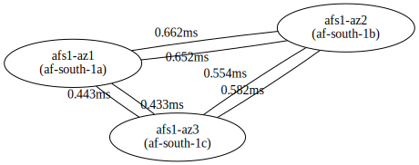 |
ap-east-1 - Asia Pacific (Hong Kong) |
- | 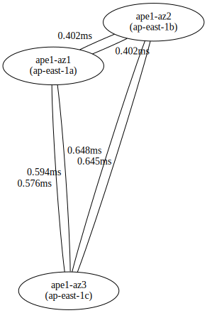 |
ap-northeast-1 Asia Pacific (Tokyo) |
N/A - I couldn’t get instance launched in apne1-az3? (no capacity) | N/A |
ap-northeast-2 Pacific (Seoul) |
- | 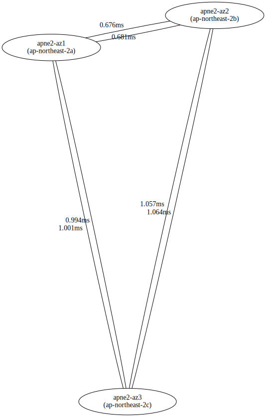 |
ap-south-1 Pacific (Mumbai) |
1 and 2 are super close to each other |
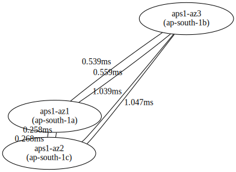 |
ap-southeast-1 Pacific (Singapore) |
apse1-az1 is way farther away than the other two | 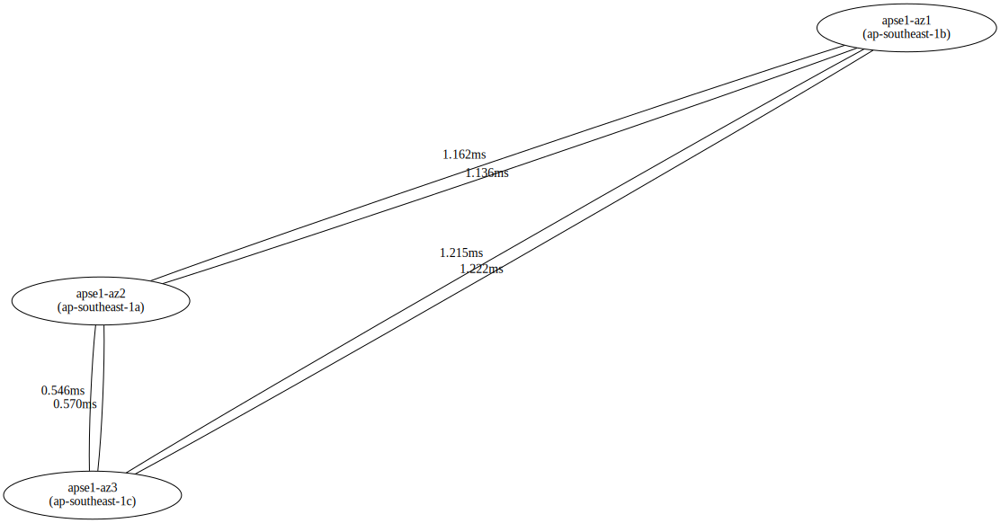 |
ap-southeast-2 Pacific (Sydney) |
- | 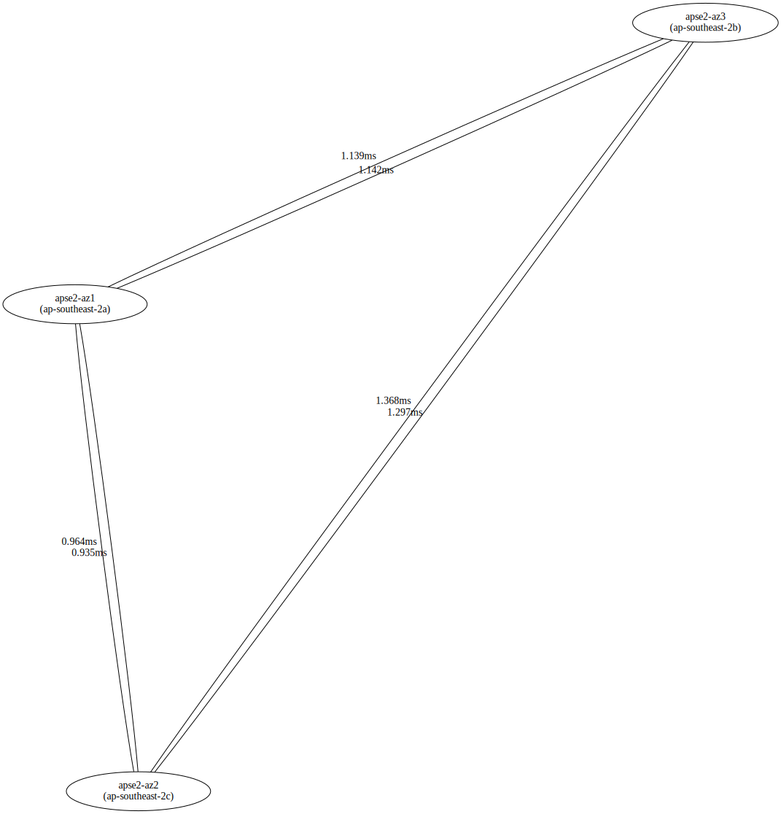 |
ca-central-1 (Central) |
- | 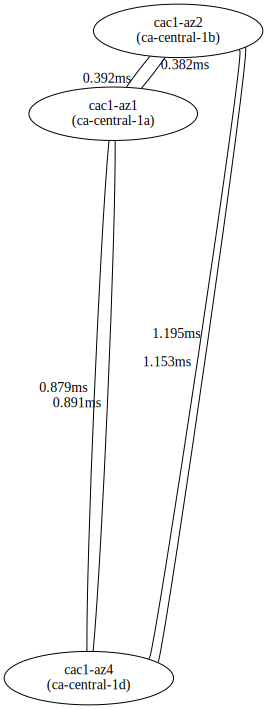 |
eu-central-1 (Frankfurt) |
- | 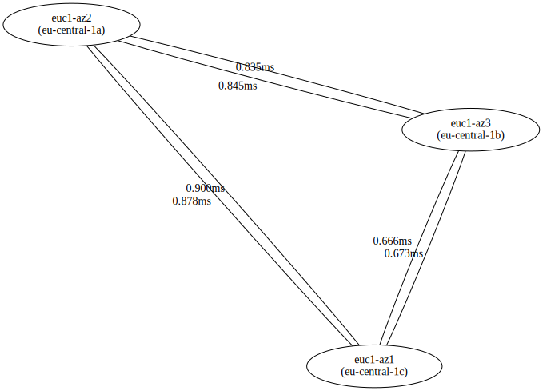 |
eu-north-1 (Stockholm) |
- | 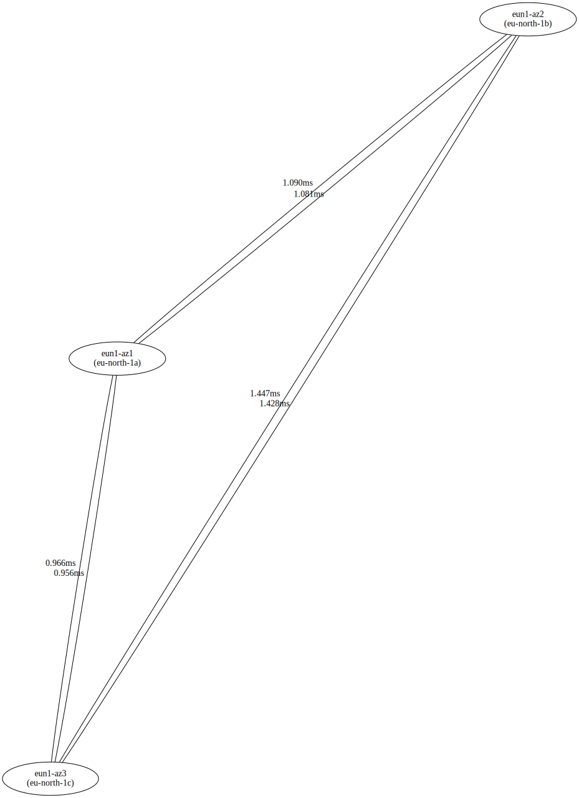 |
eu-west-1 (Ireland) |
- | 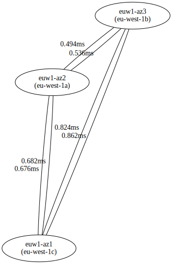 |
eu-west-2 (London) |
- | 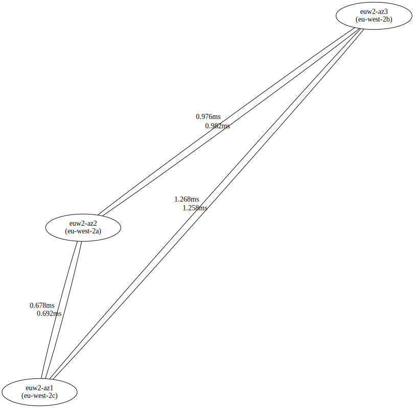 |
eu-west-3 (Paris) |
- | 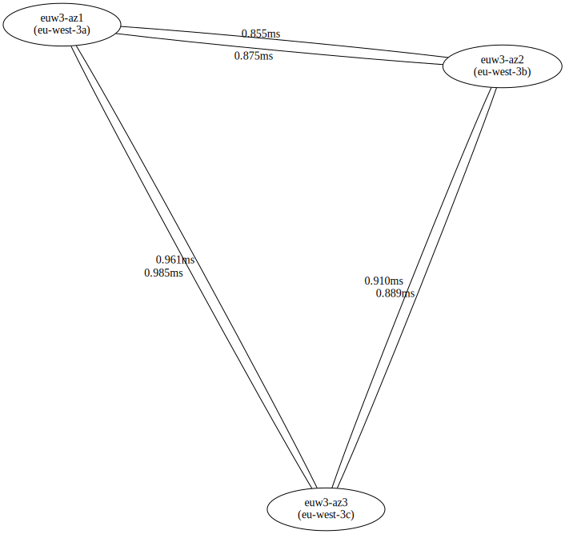 |
me-south-1 East (Bahrain) |
Winner of the tightest region award! | 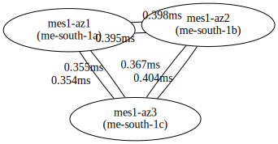 |
sa-east-1 America (Sao Paulo) |
Winner of the farthest AZ award! :( | |
us-east-1 East (N. Virginia) |
Most complext topology, 6 AZs! | 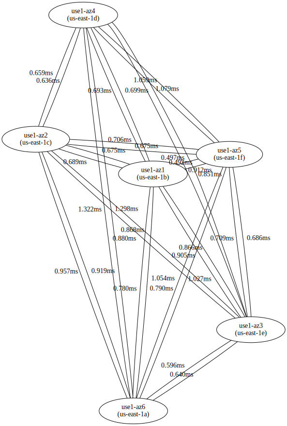 |
us-east-2 East (Ohio) |
- | 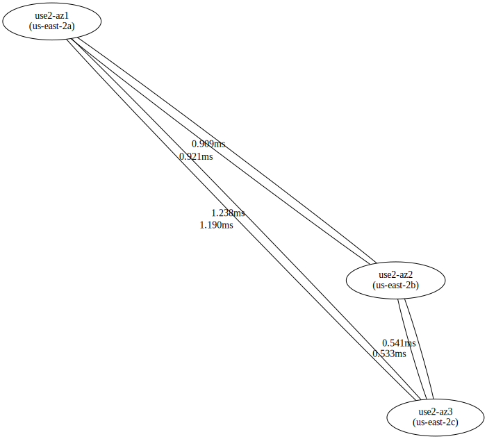 |
us-west-1 West (N. California) |
There is a third AZ, but it wasn’t available to me? | 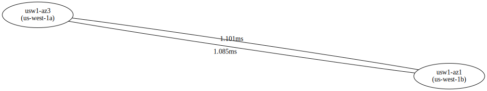 |
us-west-2 West (Oregon) |
- | 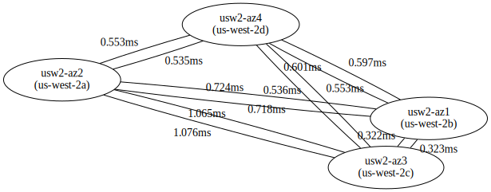 |
{kind=link}
{kind=link}
{kind=link}
{kind=link}
{kind=link}
{kind=link}
{kind=link}
{kind=link}
{kind=link}
{kind=link}
{kind=link}
{kind=link}
{kind=link}
{kind=link}
{kind=link}
{kind=link}
{kind=link}
{kind=link}
Conclusion
Before deploying something to “the cloud” that does cross-AZ RPC, at least be aware of the monetary cost and at least with these maps, a feel for the latency between AZs.
Maybe next I’ll do Google Cloud Regions / Zones and Microsoft Azure Regions / Zones?
Comment via email